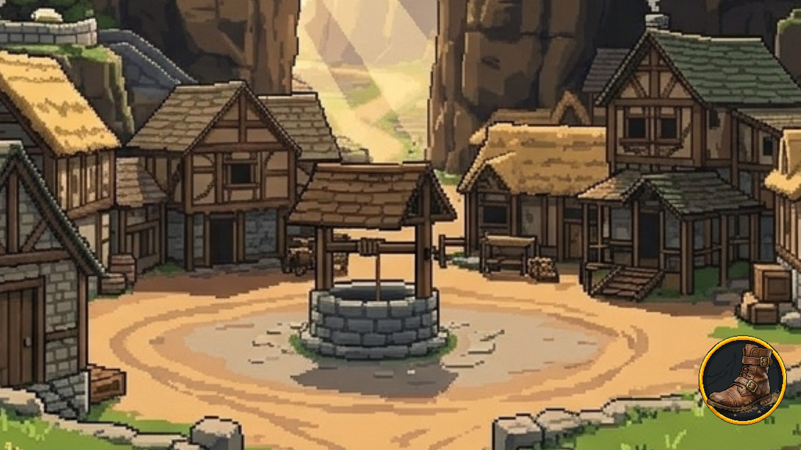
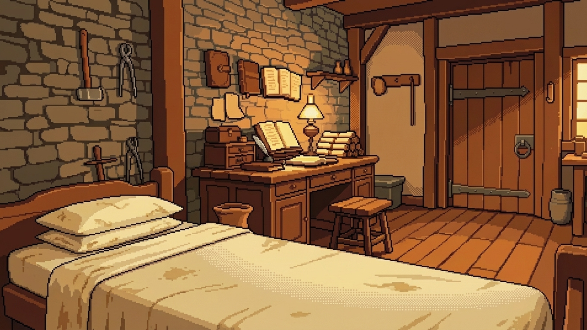
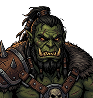

플레이 경험
플레이어는 마을을 이동하며 NPC를 발견하고, Pixel Crushers 기반 대화와 LLM 자유대화를 거쳐 신뢰도와 감정 상태를 변화시킵니다.

Project snapshot
플레이어는 마을을 이동하며 NPC를 발견하고, Pixel Crushers 기반 대화와 LLM 자유대화를 거쳐 신뢰도와 감정 상태를 변화시킵니다.
세계의 규칙과 퀘스트가 물리 퍼즐로 연결됩니다. 오크 속도, 자유낙하, 절벽 높이 같은 실험형 퍼즐이 학습 포인트를 담당합니다.
저장/로드, 런타임 서비스, 씬 전환, 백엔드 호출을 분리해 게임이 씬을 오가도 진행 상태가 유지되도록 설계했습니다.
Playable demo flow
아래 단계를 눌러 실제 데모의 런타임 책임을 확인할 수 있습니다.
Persistent runtime
GameBootstrap이 저장 데이터를 로드하고 GameServices에 런타임 서비스를 등록합니다.
World map
장소 노드를 선택하면 전반부 필드 맵의 역할과 배치 NPC가 바뀝니다.

inside_home
전반부의 시작 지점입니다. 메리와의 첫 접점이 만들어지고 필드 탐색으로 이어집니다.
AI conversations
Final gatekeeper
전반부의 핵심 자유대화 NPC입니다. 플레이어 발화에 따라 신뢰도와 감정이 바뀌고, 성공 여부가 다음 대화 흐름에 반영됩니다.
"네가 뭘 알고 있는지, 한 번 말해 봐."
Runtime architecture
AXIOM의 전반부는 기능별 런타임 서비스와 브리지 컴포넌트가 느슨하게 연결됩니다.
GameSaveService, SceneFlowController, RuntimeService가 항상 남아 gameplay 씬을 교체합니다.
ManagersSceneConversation, FreeInput, Gameplay, MovingScene 스텝을 하나의 선형 플로우로 실행합니다.
JH_GameJSON 장소 데이터와 AssetRegistry를 읽어 배경, NPC, 이동 화살표를 동적으로 표시합니다.
Resources/MapDataQuest, NPC, Rule, Inventory가 Definition/Runtime/UI/Data 패턴으로 관리됩니다.
SystemUI_MSFirebase backend
POST /freeTurn
{
"npcId": "Mary_S1",
"userInput": "저는 당신을 설득하러 왔어요.",
"currentTrust": 50,
"currentEmotionLabel": "wary"
}
returns replyText, trustScore, baseEmotionLabel, dialogueAction
Demo ready
실제 플레이 흐름, NPC 상호작용, 물리 퍼즐, AI 대화 백엔드가 연결된 상태를 하나의 데모 경험으로 소개할 수 있습니다.